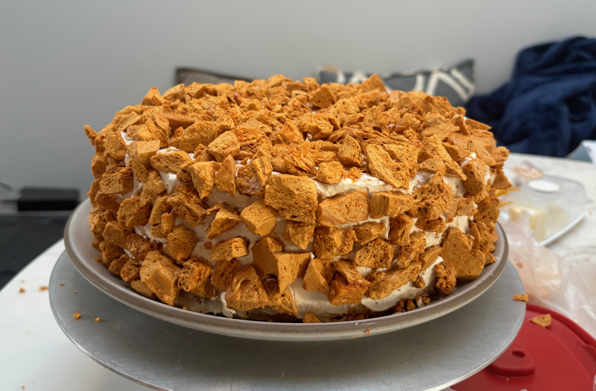
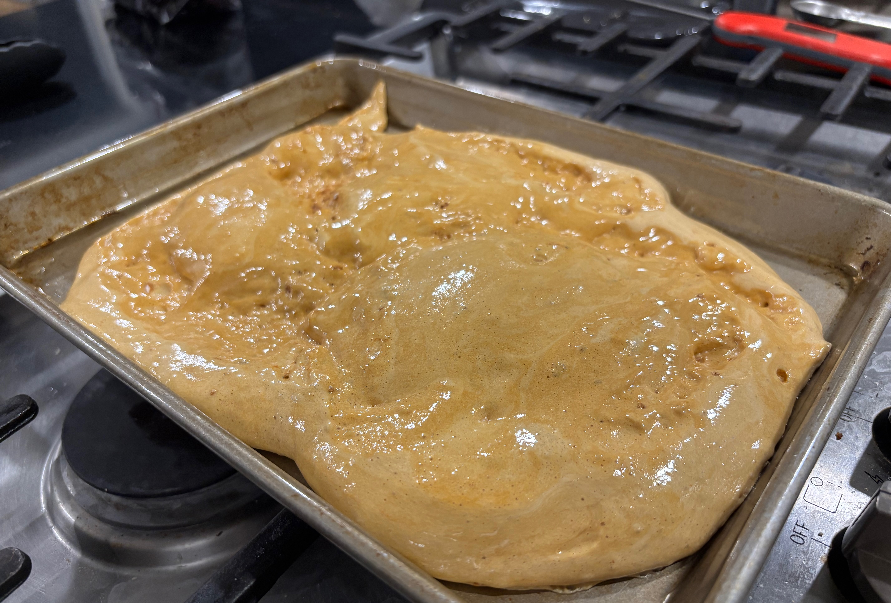
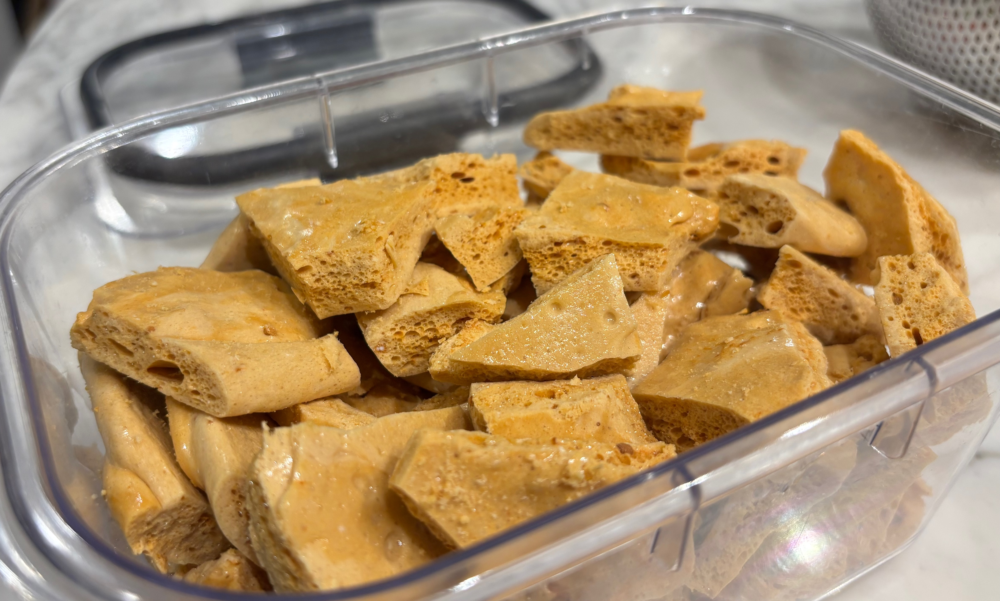

Leavening Agents: Baking Soda
learn about chemical leavening by making coffe crunch cake!
What are Leavening Agents?
Leavening agents are substances that cause doughs and batters to expand by releasing gases within the mixture. The resulting bubbles make baked goods lighter and softer in texture.
Types of Leavening Agents
There are three major categories:
- Biological: Yeast and bacteria produce CO₂ through fermentation of sugars.
- Chemical: Baking soda and baking powder create gas through acid-base reactions.
- Physical: Air or steam incorporated during mixing or baking.
Baking Soda (Sodium Bicarbonate)
Baking soda is chemically known as sodium bicarbonate (NaHCO₃). It is a base that reacts with acids to produce carbon dioxide (CO₂), water, and a salt. This gas gets trapped in the batter and expands when heated, causing the product to rise.
Acid-Base Reaction
When an acid such as vinegar (acetic acid), lemon juice (citric acid), or buttermilk (lactic acid) is added, the following reaction occurs:
NaHCO₃ + H⁺ → Na⁺ + CO₂↑ + H₂O
This is an instantaneous reaction — as soon as the acid and base are mixed, carbon dioxide begins to form.
Thermal Decomposition of Baking Soda
Even without an acidic ingredient, baking soda can release carbon dioxide when heated. This process is called thermal decomposition and occurs around 80°C (176°F) or higher:
2 NaHCO₃ → Na₂CO₃ + CO₂↑ + H₂O
In this reaction, sodium bicarbonate breaks down into sodium carbonate (a more bitter-tasting residue), carbon dioxide, and water vapor.
Comparison with Baking Powder
Baking powder contains both an acid (usually cream of tartar or monocalcium phosphate) and a base (baking soda), along with a drying agent (typically cornstarch). It comes in two types:
- Single-acting: Reacts upon moisture addition only.
- Double-acting: Reacts in two stages — once when wet, and again when heated.
Key Takeaways
- Baking soda needs an acid to produce CO₂ efficiently for leavening.
- It can also decompose with heat, but this may affect taste and texture.
- Proper balance of ingredients is crucial for ideal rise and flavor.
How to Make Honeycomb Toffee
Recipe from: https://www.seriouseats.com/blums-coffee-crunch-cake
Ingredients
- 2 1/4 cups (15.75 ounces) sugar
- 1/3 cup (2.66 ounces) strong brewed coffee
- 1/3 cup (3.75 ounces) light corn syrup
- 1 1/2 tablespoons baking soda
Instructions
- Attach a candy thermometer to the side of a 4- to 6-quart heavy pot. Add the sugar, coffee, and corn syrup to the pot, and cook over medium-high heat, stirring occasionally with a heatproof silicone spatula until the mixture reaches 270°F, about 10 minutes.
- Meanwhile, coat a 13-by-18-by-1-inch baking sheet with nonstick baking spray. Measure the baking soda into a ramekin or cup and place near the stovetop, along with a large whisk.
- When the crunch reaches 270°F, increase the heat to high and stir constantly until the crunch reaches 305°F. Remove from the heat and quickly whisk the baking soda into the crunch; the mixture will expand and aerate quickly, in a matter of seconds.
- Pour the crunch onto the baking sheet. Allow the crunch to cool, undisturbed, for at least 30 minutes before using a cleaver or other heavy knife to chop the toffee. 

See the Chemistry
You can see the effect of baking soda in the hundreds of bubbles throughout the coffee crunch due to the release of carbon dioxide.
